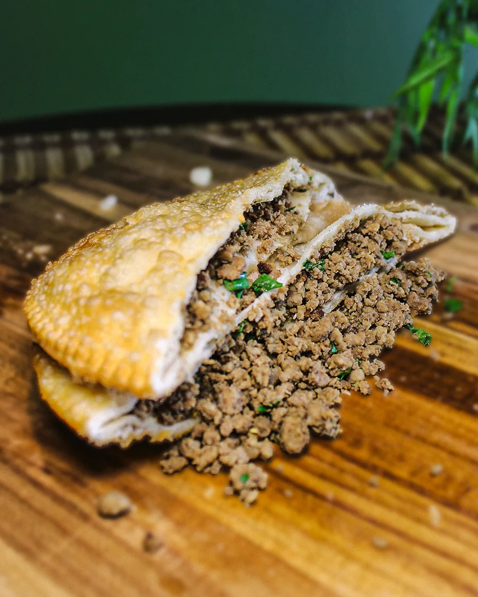
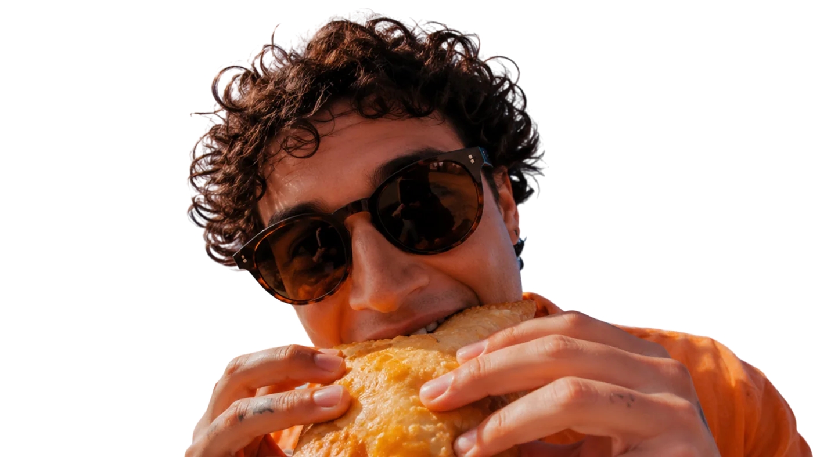
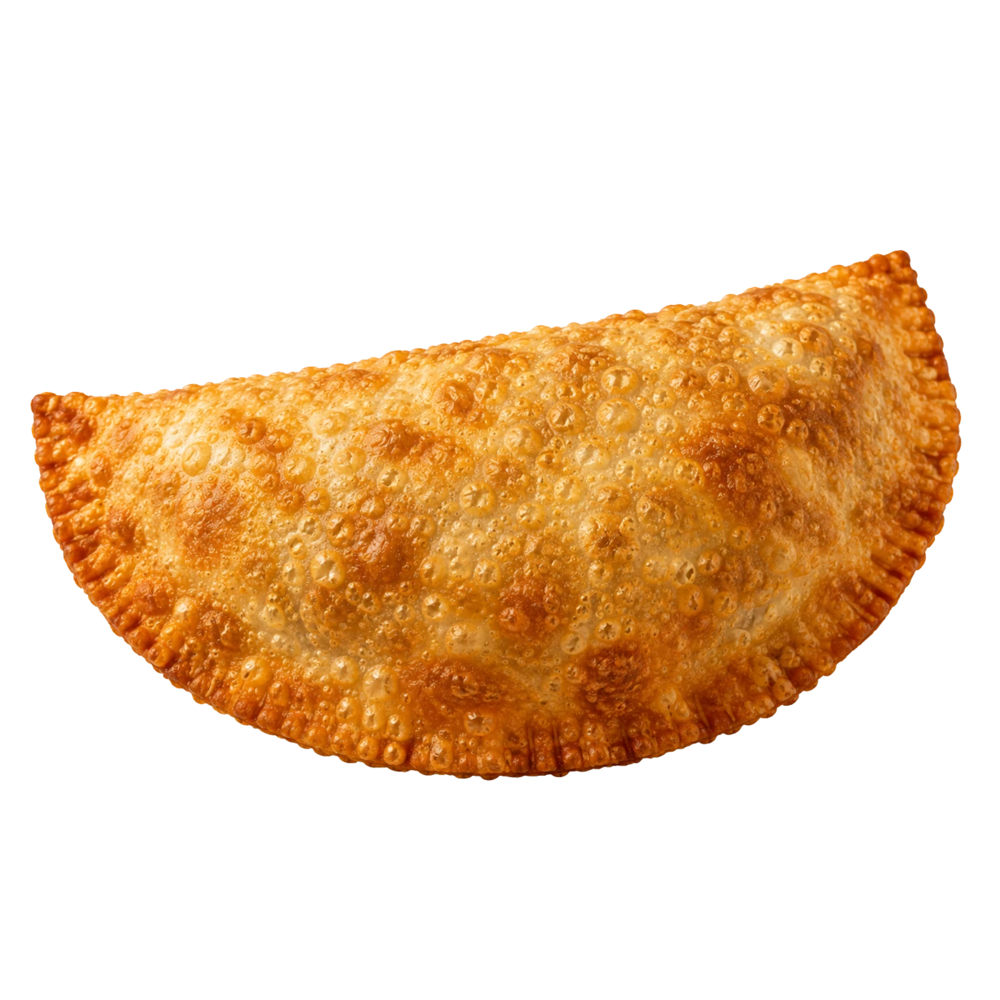
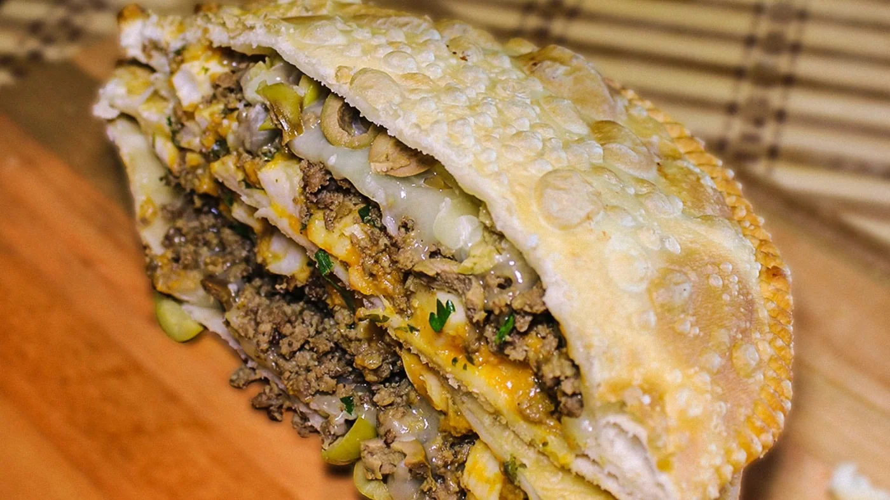
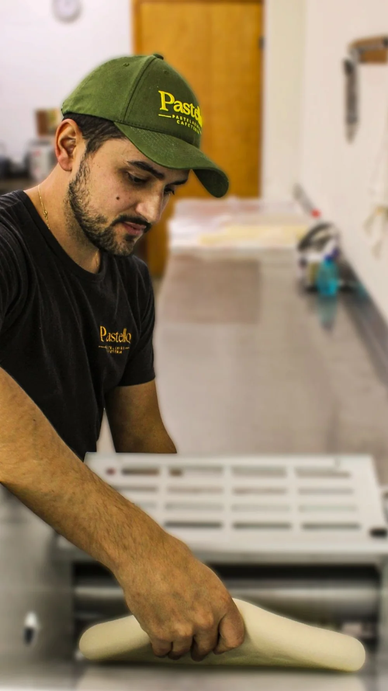
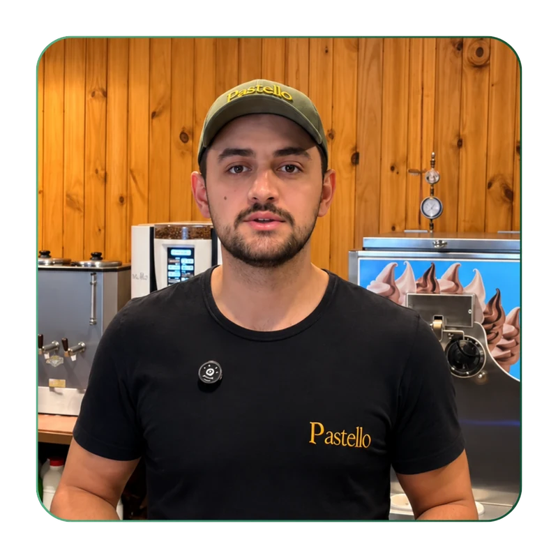
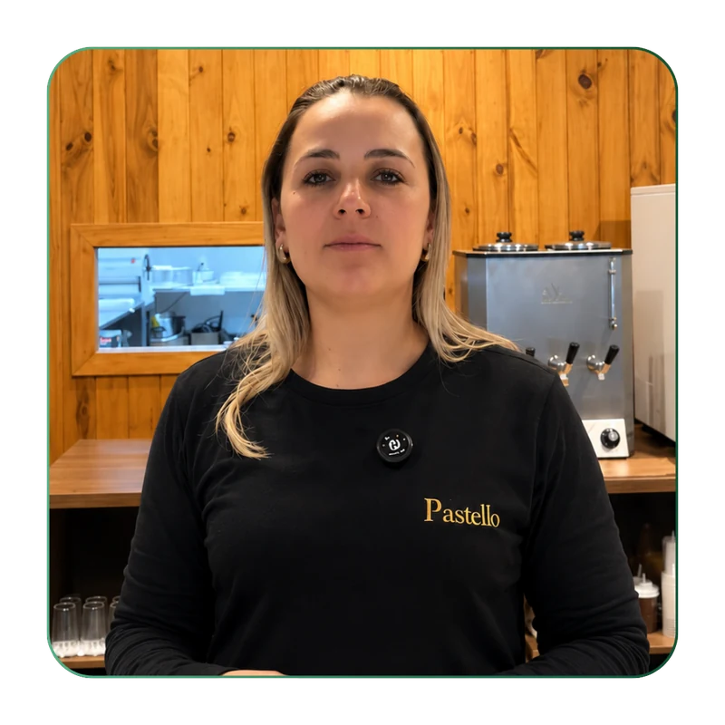
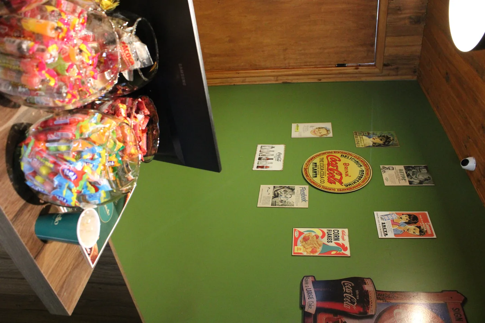

Carne
Carne bem temperada e aquele recheio que faz você pensar: “era só um mesmo”… até pedir o segundo.
Palmas — Paraná
Pastel quentinho, massa própria e recheio de verdade. Feito na hora para transformar uma pausa simples em um momento bom do dia.
Na Pastello, o simples é levado a sério. Produção diária, preparo na hora e cuidado em cada pedido.

Massa própria para uma experiência que começa no preparo.
Produção diária para manter o produto sempre fresco.
Preparo na hora para você receber o pastel no seu melhor momento.

Massa crocante por fora, recheio de verdade por dentro — e aquele calor que só quem prova de verdade entende.
Um pastel quentinho, um café, uma conversa rápida ou só alguns minutos para você. A Pastello está no meio da rotina para tornar esse momento mais gostoso.
Porque comer rápido não precisa significar comer de qualquer jeito. Na Pastello, cada detalhe ajuda a fazer da pausa uma parte boa do seu dia.
Vem fazer sua pausa na Pastello
Na Pastello, qualidade não está só no que aparece no prato. Está no cuidado antes, durante e depois do preparo.

Higiene, processo e atenção aos detalhes fazem parte da rotina.
Você sabe o que esperar cada vez que volta.
Recheio de verdade e sabor perceptível, sem promessas exageradas.
Gente atendendo gente, de forma simples e verdadeira.
Escolha o que você quer, faça seu pedido pelo Aiqfome e pronto. Simples assim.
Escolha seu pastel e acompanhamento.
Faça o pedido pelo Aiqfome.
Aguarde as instruções do pedido e aproveite.
Pedido online
Encontre nosso perfil, veja o cardápio completo e faça seu pedido em poucos toques, direto pelo app ou pelo site do Aiqfome.
Ver perfil no AiqfomeManda uma mensagem e a gente te atende por lá também. Simples e rápido.
Nossa História


A Pastello nasceu em 2023, do encontro entre uma oportunidade de negócio e o sonho de dois irmãos, Gabriel e Vanessa, de empreender juntos, com o apoio da família desde o início. O próprio nome da marca nasce dessa origem: a união entre "pastel" e o sobrenome Mello.
A vivência dos irmãos no ramo da alimentação, Gabriel trabalhou dos 14 aos 21 anos em uma pastelaria, e Vanessa também teve sua trajetória no setor, foi essencial para transformar esse sonho em uma empresa construída com conhecimento e dedicação.
O que começou pequeno, com atendimento presencial e uma equipe reduzida, cresceu ao longo dos anos: a operação se profissionalizou, o delivery chegou para aproximar a marca de mais clientes, e o cardápio se expandiu, do tradicional pastel de carne ao Pastel Paranaense, passando por doces caseiros, cookies, café e bebidas.

Mais do que crescer, a Pastello construiu sua identidade através da qualidade: ingredientes escolhidos com cuidado, preparo diário, padronização e treinamento constante da equipe, um trabalho que o cliente nem sempre vê, mas sente no resultado.
Construída também ao lado dos clientes, muitos dos quais se tornaram amigos ao longo da caminhada, a Pastello encontrou em Palmas seu reconhecimento: a certeza de que a confiança das pessoas é o maior reflexo do trabalho bem feito.
Hoje, a marca se resume em três palavras: Qualidade, Acolhimento e Sabor. E segue acreditando que alimentação também é memória, por isso, busca entregar mais do que uma refeição: uma experiência que remete ao gosto de infância e aos momentos que merecem ser lembrados.
Essa história ainda está sendo escrita, com os olhos voltados para o futuro, sem nunca abrir mão da essência que trouxe a Pastello até aqui.
Prova social
Comentários reais de clientes, direto do Instagram.
Top, amamos, eu sou autista adulta e tenho 2 filhos autistas e todos nós amamos os pastéis de vcs, melhor da cidade, parabéns pelo atendimento sempre acolhedor com os autistas!
Melhor pastel da cidade, meus filhos amam.
Pastel bem recheado mesmo, aquela borda é o toque. ❤️
O melhor pastel da cidade!!! 😋
Pastel muito saboroso.
Muito gostoso e um atendimento sensacional! 🔥
Rua Marechal Deodoro, 899 — Palmas, PR.
Rua Marechal Deodoro, 899, Palmas-PR.
Segunda a sexta, 8h15–20h; sábado, 7h30–12h. Domingo, fechado.
Sim.
Sim.
Sim.
Pelo Aiqfome.
Palmas-PR.
Pastel quentinho, feito na hora e pronto para transformar sua pausa em um momento bem feito.
Quando quiser algo bem feito, a Pastello está aqui.
Pedir pelo Aiqfome